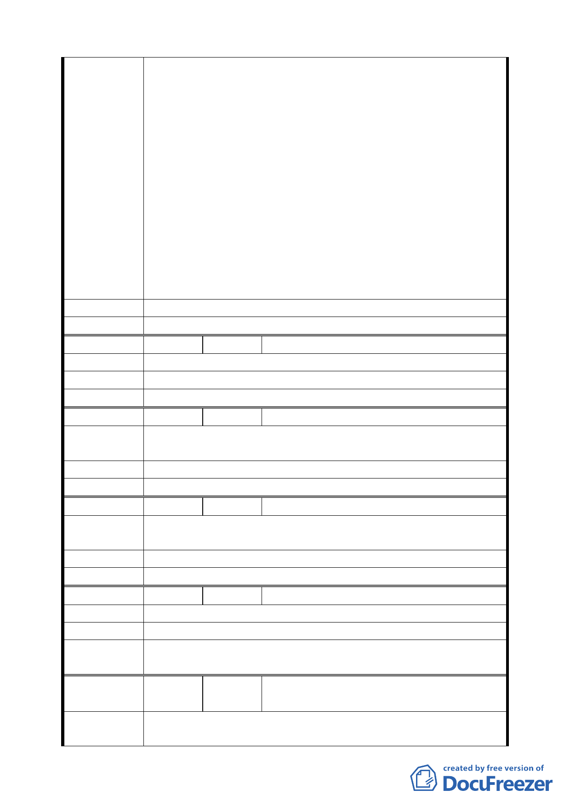

工務所巫漢忠主任，協助與 CK570C 標及 CK570G 標之承
包商協調依原地原貌拆除重建，並於 92.12.18 雙方簽訂
協議書（詳附件資料）並至公証公司公証，房屋亦已於
93 年 4 月拆除完畢，捷運施工廠商預計於 94.12.31 將
廠房重建完成。
三、期間歷經房屋搬遷…等等之不便及心酸，本人及家人已
淪為捷運工程之受害者，盼待多時盼得捷運潛遁機已通
過，捷運施工廠商亦依承諾已開始進行重建工程，貴單
位之聯開案豈不硬生生將得來不易之新居再度摧毀，一
家人再度在外漂泊，儼然是政府對身為小市民的我們進
行二次傷害。
四、懇請 貴單位慎重考慮對本人造成之影響，並於本文鄭重
表示本人不願意加入本次之聯合開發案，懇求還我原來
安居之住所。
建 議 辦 法 有關貴單位延平北路三段以東聯合開發案本戶無參加意願。
委員會決議 同編號 1。
編 號 ３ 陳情人 黃學德、黃學仁（民權西路 231 號）
陳 情 理 由 本案並未增進我等之權益，反使原有權益受損。
建 議 辦 法 擬不參加此聯合開發案。
委員會決議 同編號 1。
編 號 ４ 陳情人 詹明謙（民權西路 233 號 1 樓）
陳情理由
因捷運關係暫時停止營業，改建後恐無法得回原有樓層，故
暫且不同意改建。
建 議 辦 法 暫且不同意改建。
委員會決議 同編號 1。
編 號 ５ 陳情人 詹菊妹（民權西路 233 號 4 樓）
陳情理由
因在此地住了幾十年了，不習慣搬遷。但不知以後聯合開發
是否可分回原處。
建 議 辦 法 不同意。
委員會決議 同編號 1。
編 號 ６ 陳情人 林祥富等二人（延平北路三段１巷５號）
陳 情 理 由 共同開發坪數分太少，不同意合建。
建 議 辦 法 因本屋分建三及住三各一半，所分坪份不合理，所以不興建。
委員會決議 同編號 1。
編
號７
陳情人
柯寬容等二人（延平北路三段１巷 11
號、19 號）
陳情理由
目前 11 號為 2 樓、19 號為 4 樓，各有 1 層或 2 層出租，月可
收約 3 萬租金，若參與開發，再與建商分配、扣掉大小公設，
四